Overview
This project implements the NeRF (Neural Radiance Field) introduced by the paper NeRF: Representing Scenes as Neural Radiance Fields for View Synthesis. I first implement a simple 2D version of NeRF to simulate 2D images. Then in the second part I implement a 3D NeRF model and test it with the lego scene from the paper.Part 1: Fit a Neural Field to a 2D Image
Introduction
The 2D Neural Radiance Field (NeRF) is a simplified version of the full 3D NeRF that maps 2D input coordinates (e.g., pixel locations) to output color intensities.
Given a 2D image $ I $ of size $ H \times W $:
- For a pixel at position $\mathbf{p} = (u, v) $, where $u$ and $v$ are the pixel's horizontal and vertical coordinates, predict the color intensity $\mathbf{c} = (r, g, b) $
This can be expressed as a function: $$ \mathbf{c} = f_\theta(\mathbf{p}), $$ where:
- $ \mathbf{p} $: Input 2D pixel position.
- $ \mathbf{c} $: Output color at that position.
- $ f_\theta $: Neural network parameterized by weights $\theta $
2. Positional Encoding (Fourier Features)
A standard neural network struggles to model high-frequency signals like textures or sharp edges in images. To overcome this, Fourier features map the input 2D pixel positions into a higher-dimensional space.
Positional Encoding Formula:
For a 2D coordinate $ \mathbf{p} = (u, v) $ apply sinusoidal encoding: $$ PE(\mathbf{p}) = \left[ u, v, \sin(2^0 \pi u), \cos(2^0 \pi u), \sin(2^1 \pi u), \cos(2^1 \pi u), \dots, \sin(2^L \pi u), \cos(2^L \pi u), \sin(2^0 \pi v), \cos(2^0 \pi v), \dots, \sin(2^L \pi v), \cos(2^L \pi v) \right]. $$ Where:
- $L$: Highest frequency level (higher $L $ captures finer details).
- Output dimension: $2 \times (2L + 1) $which is much larger than the 2D input.
This creates a high-dimensional embedding for $ \mathbf{p} $ allowing the network to learn more complex patterns.
3. Neural Network (MLP)
Input:
The positional encoding $PE(\mathbf{p})$, which has shape $D_{\text{enc}} = 2 \times (2L + 1) $
Output:
The predicted color $\mathbf{c} = (r, g, b)$ for the pixel: $$ \mathbf{c} = f_\theta(PE(\mathbf{p})). $$
Architecture:
- Input Layer: Accepts $PE(\mathbf{p})$.
- Hidden Layers: Several fully connected layers with non-linear activations (ReLU or others).
- Output Layer: A linear layer with 3 output nodes (for $r, g, b$).

|
Forward Pass:
- Compute $PE(\mathbf{p}) $from the input pixel position.
- Pass $PE(\mathbf{p}) $ through the MLP to predict $\mathbf{c} $
4. Loss Function
The model uses a standard Mean Squared Error (MSE) loss as a loss function for training. The model is train to minimize the MSE difference between the predicted color $\mathbf{c}_{\text{pred}}$ and the ground truth color $\mathbf{c}_{\text{true}}$.
To evaluate the reconstruction quality of a image, I also calculate peak signal-to-noise ration (PSNR). PSNR is calculated from the MSE: $$PSNR=10\cdot\log_{10}(\frac{1}{MSE})$$
5. Training and Rendering
Training:
- Sample random pixel positions $\mathbf{p}$ and their ground truth colors $\mathbf{c}_{\text{true}}$ from the training image.
- Compute the positional encoding $PE(\mathbf{p})$.
- Pass $PE(\mathbf{p}) $through the MLP to predict $\mathbf{c}_{\text{pred}}$.
- Compute the loss and update the model using backpropagation.
Rendering:
To reconstruct the full image:
- Pass all pixel positions $\mathbf{p}$ in the image grid through the trained network.
- Predict colors $\mathbf{c}$ for all pixels.
- Reshape the predictions into an $H \times W \times 3 $ image.
Fox
I chooses the fox image for the training of my 2D MLP network.

|
I train my model with $L=10$ and hidden dimension of $256$ for $5000$ iterations and batch size of $1000$. My learning rate is $1e-3$. The model reach a PSNR of $26.39$.
|
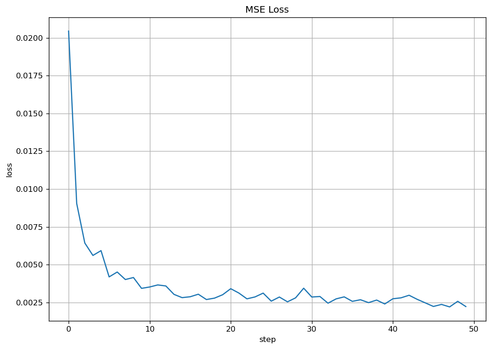
|
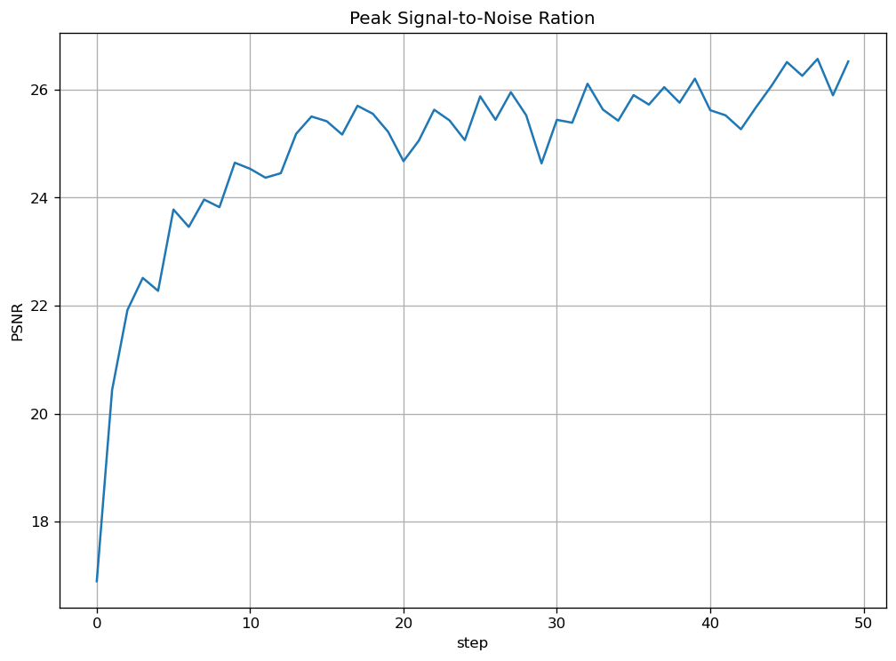
|
|
|
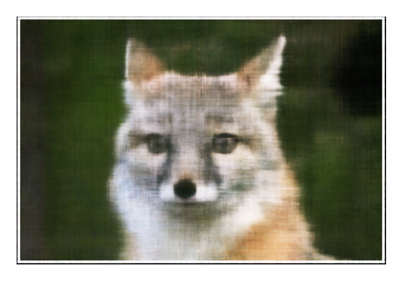
|
|
|
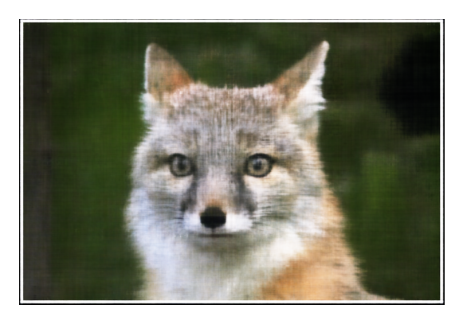
|
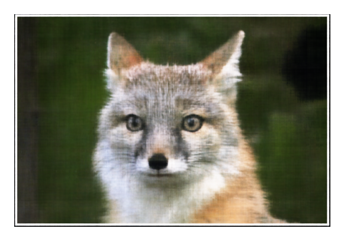
|
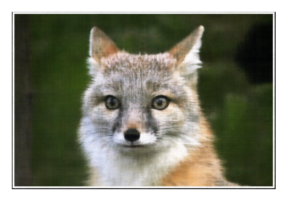
|
Cat
I also choose the image from the cute cat Hujiao as input for training the Mlp.|
|
I train my model with $L=10$ and hidden dimension of $512$ for $5000$ iterations and batch size of $5000$. My learning rate is $1e-3$. The model reach a PSNR of $26.33$.
|
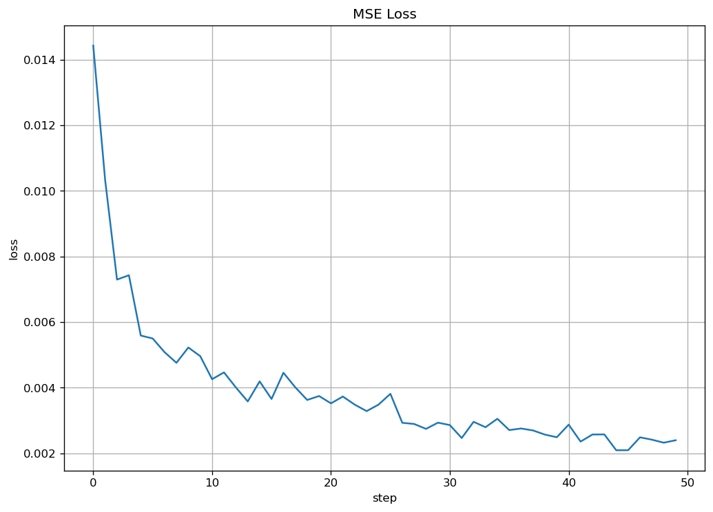
|
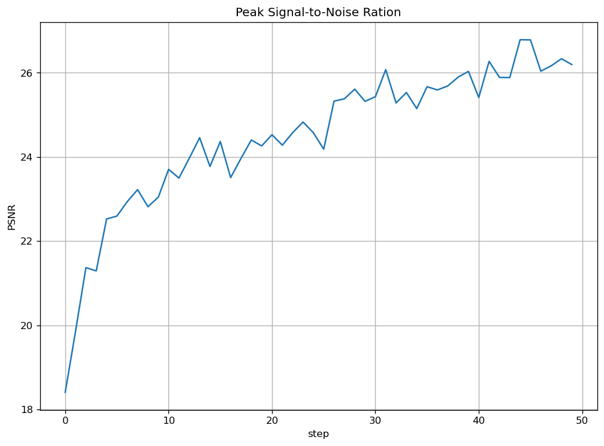
|
|
|
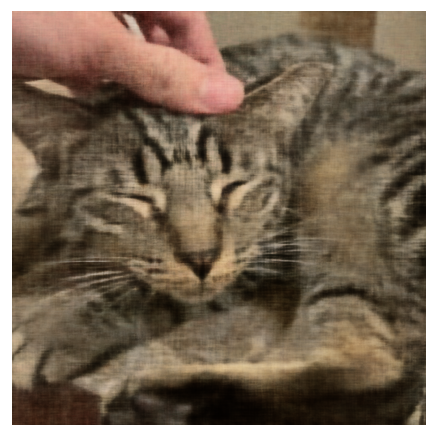
|

|
|
|
|
|
Hyperparameter Tunning
My first try for hyperparameter tunning is changing the hidden layers to $512$. It slightly increase the PSNR to $27.48$, which means a higher quality in reconstructing the image.|
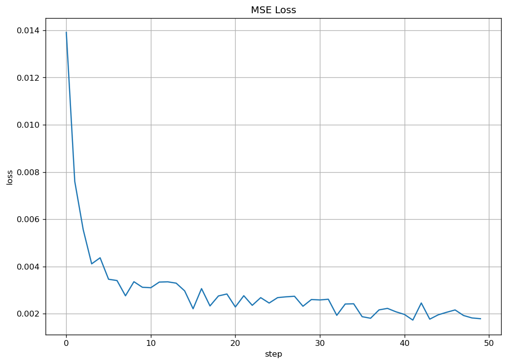
|
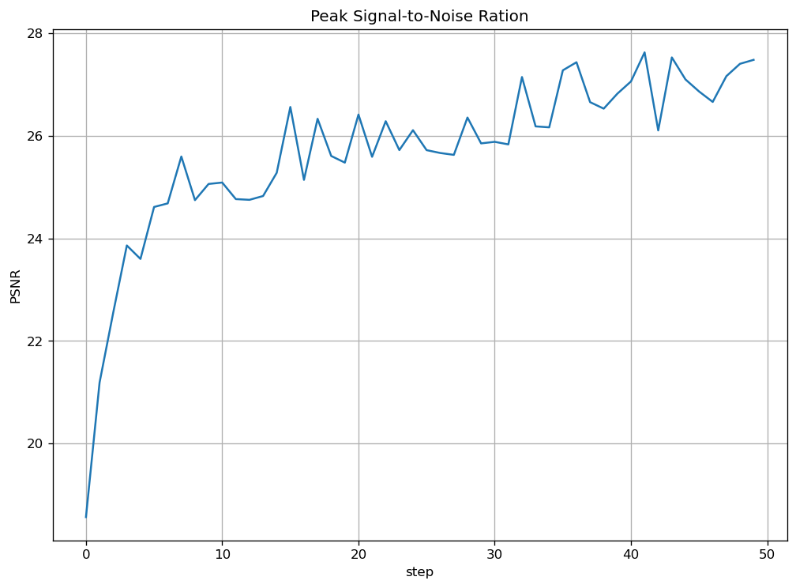
|
|
|
|
My another try for hyperparameter tunning is changing the max frequency $L$ to $15$, while keeping other parameters the same as my original trained model. The PSNR this model reaches is $26.55$. But the model comes to an overfitting to the image and actually cause a bad reconstruction quality.
|
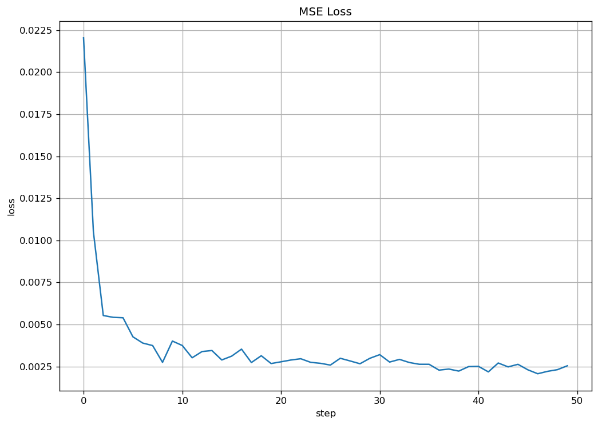
|
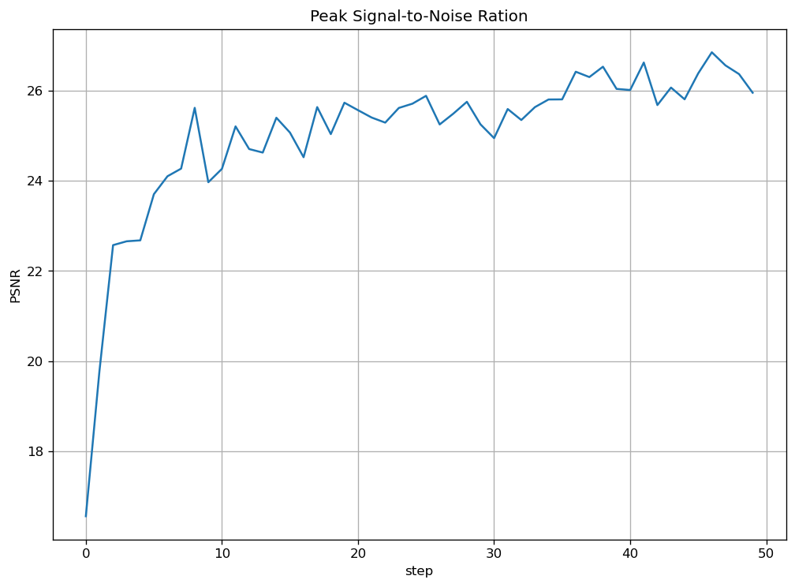
|
|
|
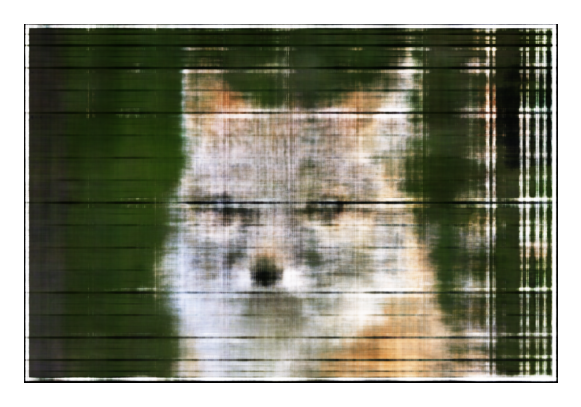
|
Part 2: Fit a Neural Radiance Field from Multi-view Images
Introduction
In Part 2 of the NeRF implementation, I deal with ray sampling, point sampling, neural network prediction, and volume rendering to compute the final pixel colors of an image.
1: Ray Sampling
Each pixel in the image corresponds to a camera ray in 3D space. A ray is parameterized as: $$ \mathbf{r}(t) = \mathbf{r_o} + t \cdot \mathbf{r_d}, \quad t \geq 0 $$ Where:
- $ \mathbf{r_o} $: Ray origin (camera position in world coordinates).
- $ \mathbf{r_d} $: Ray direction (unit vector pointing into the scene).
- $t$: Scalar controlling the depth along the ray.
Ray Sampling Process
For an image of size $H\times W$
- Compute the camera ray direction for each pixel using the camera intrinsics ($K$) and camera-to-world transformation ($c2w$).
- For pixel coordinates ($u, v$):
- Convert them to normalized camera coordinates.
- Map camera cordinates to world coordinates using $K$ and $c2w$
Mathematics
$$ \mathbf{d}_{\text{camera}} = \frac{K^{-1}}{s} \cdot \mathbf{p}_{\text{pixel}} $$ $$ \mathbf{d}_{\text{world}} = c2w \cdot \mathbf{d}_{\text{camera}} $$ Where:
- $ \mathbf{p}_{\text{pixel}} = \begin{bmatrix} u \\ v \\ 1 \end{bmatrix}$: Homogeneous pixel coordinate.
- $K = \begin{bmatrix} f_x & 0 & o_x \\ 0 & f_y & o_y \\ 0 & 0 & 1 \end{bmatrix}$: Camera intrinsic matrix.
- $c2w = \begin{bmatrix} R_{3\times3} & t\\ 0_{1\times3} & 1\end{bmatrix}^{-1}$: Camera-to-world transformation matrix.
- $s=z_c$: the depth of this point along the optical axis. $s$ is choose to equal $1$ in calculation.
2: Point Sampling Along Rays
For each ray, sample $N $ points between near and far bounds ($t_{\text{near}}$ and $t_{\text{far}}$): $$ t_i = t_{\text{near}} + i \cdot \Delta t, \quad i \in {0, 1, \dots, N-1} $$ Where:
- $\Delta t = \frac{t_{\text{far}} - t_{\text{near}}}{N}$: Step size.
- $t_i$: Depth value for the $i$-th sampled point.
The 3D position of each sampled point is: $$ \mathbf{x}_i = \mathbf{r_o} + t_i \cdot \mathbf{r_d} $$ Where:
- $\mathbf{x}_i $: 3D world coordinate of the $i$-th point along the ray.
3: Neural Network (MLP)
The goal of the neural network is to predict:
- Density ($\sigma$): Indicates how much light is absorbed or scattered at a sampled point.
- Color ($\mathbf{c}$): The emitted RGB radiance from a point.
Inputs to the Neural Network
For a point $\mathbf{x}_i $ sampled along a ray:
-
Position Encoding: Apply Fourier positional encoding ($PE$) to $\mathbf{x}_i$ $$ PE(\mathbf{x}_i) = \left[ \mathbf{x}_i, \sin(2^0 \pi \mathbf{x}_i), \cos(2^0 \pi \mathbf{x}_i), \sin(2^1 \pi \mathbf{x}_i), \cos(2^1 \pi \mathbf{x}_i), \dots \right] $$ Encodes spatial frequencies to allow the network to represent high-frequency details.
-
View Direction: The ray direction $ \mathbf{d}$ is also encoded using positional encoding ($PE(\mathbf{d})$).
The neural network maps: $$ f_\theta(PE(\mathbf{x}_i), PE(\mathbf{d})) \to (\sigma_i, \mathbf{c}_i) $$ Where:
- $ \sigma_i$: Density at point $\mathbf{x}_i $
- $\mathbf{c}_i$: RGB color emitted from point $\mathbf{x}_i $
Architecture:

|
4: Volume Rendering
The final color for a pixel is computed by integrating along the ray using the density ($\sigma$) and color ($\mathbf{c}$) predictions from the network.
Volume Rendering Equation
The discrete approximation of the volume rendering equation is: $$ \mathbf{C}(\mathbf{r}) = \sum_{i=1}^N T_i \cdot \alpha_i \cdot \mathbf{c}_i $$ Where:
- $\mathbf{C}(\mathbf{r}) $: Final color for the ray.
- $ T_i =\exp (-\sum_{j=1}^{i-1}\sigma_j\delta_j)= \prod_{j=1}^{i-1} \left( 1 - \alpha_j \right) $: Transmittance, the probability of a ray not terminating before sample location $i$.
- $\alpha_i = 1 - \exp(-\sigma_i \delta_i) $: The probability of terminating at sample location $i$.
- $\mathbf{c}_i $: Color emitted at the $i$-th point.
5: Loss Function
The loss function is similar to part 1. The training algorithm uses MSE as loss function. To evaluate the reconstruction quality of the lego scene, PSNR is also calculated.
Lego Scene
In the Lego scene, the lego dataset with sampling rays and sampling points are:|
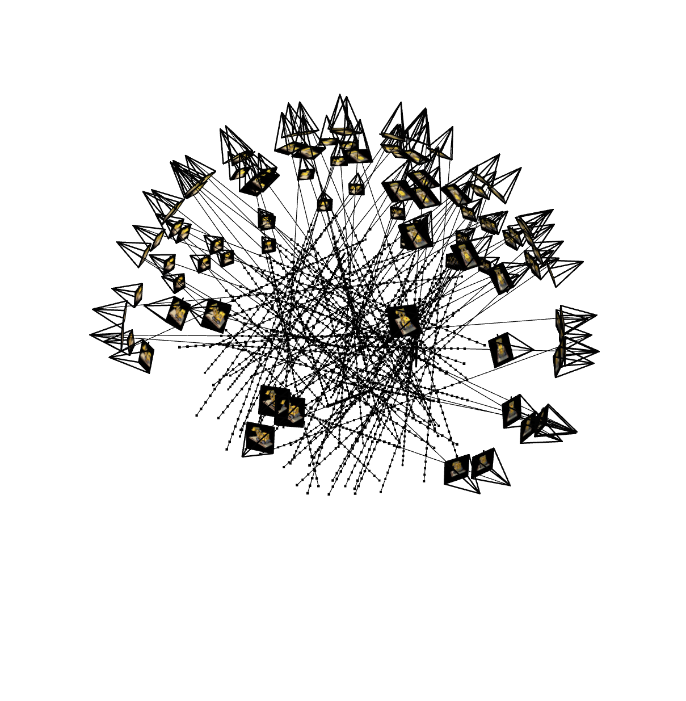
|
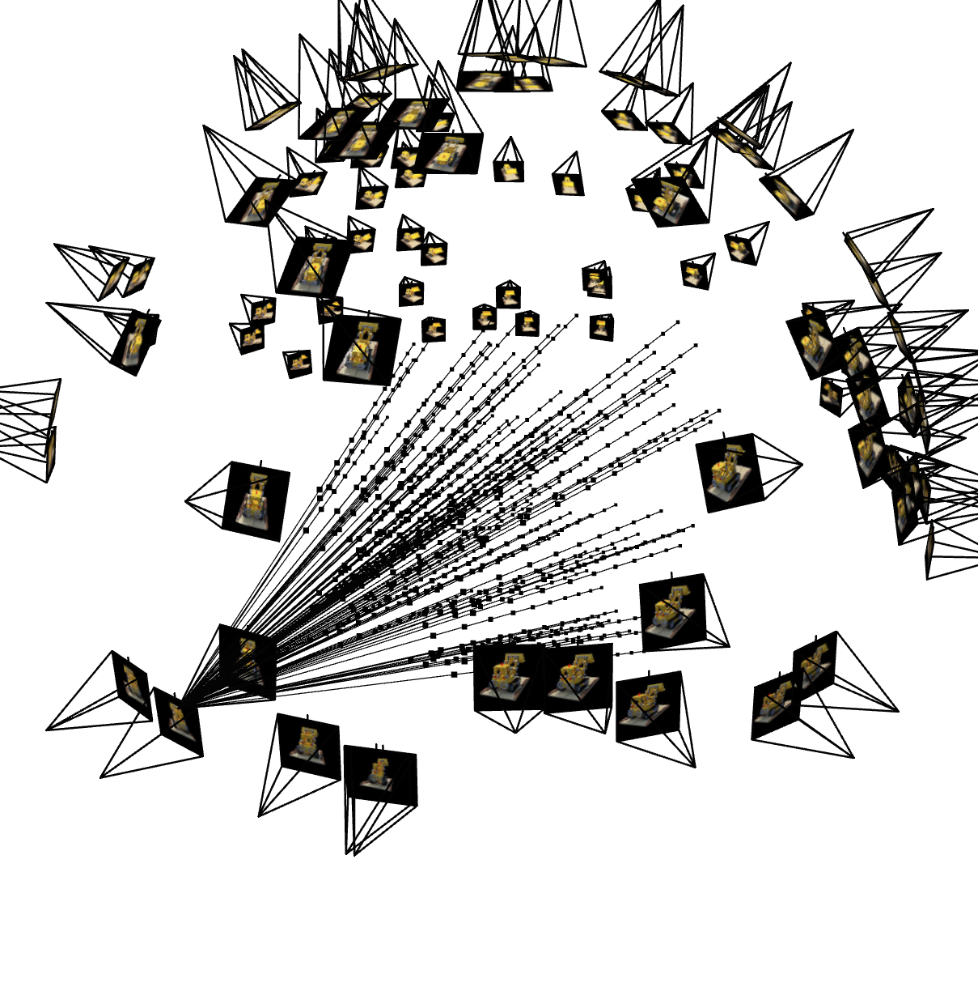
|
Training
I contructed the MLP network with $L=10$ max frequency and 256 hidden layers. My training for the network is in three steps.- Train with 3000 iterations with 500 sample rays and 64 sample points per ray. Reach validation $PSNR = 22.39$.
- Train with 1000 iterations with 1000 sample rays and 64 sample points per ray. Reach validation $PSNR = 24.07$.
- Train with 2000 iterations with 1500 sample rays and 64 sample points per ray. Reach validation $PSNR = 25.84$.
|
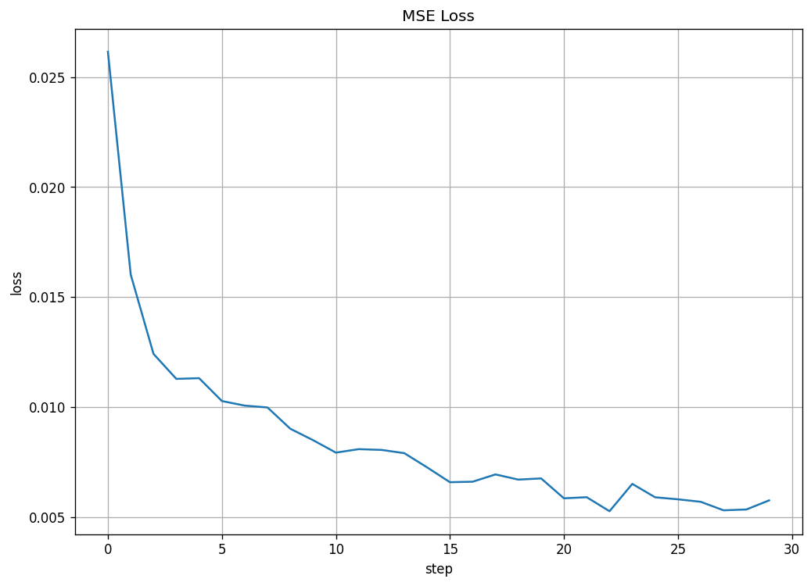
|
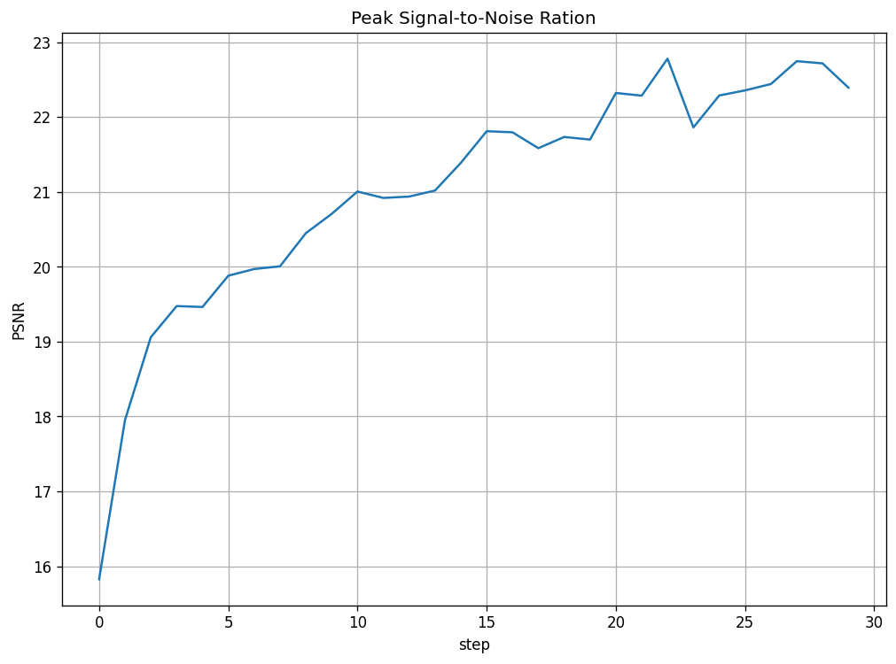
|
|
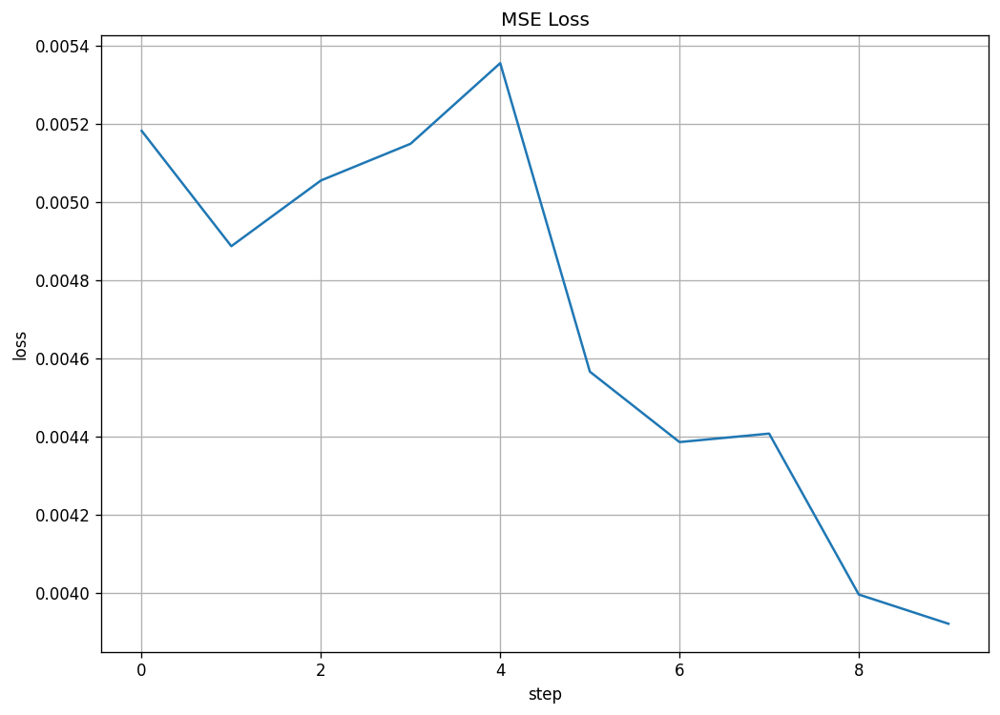
|
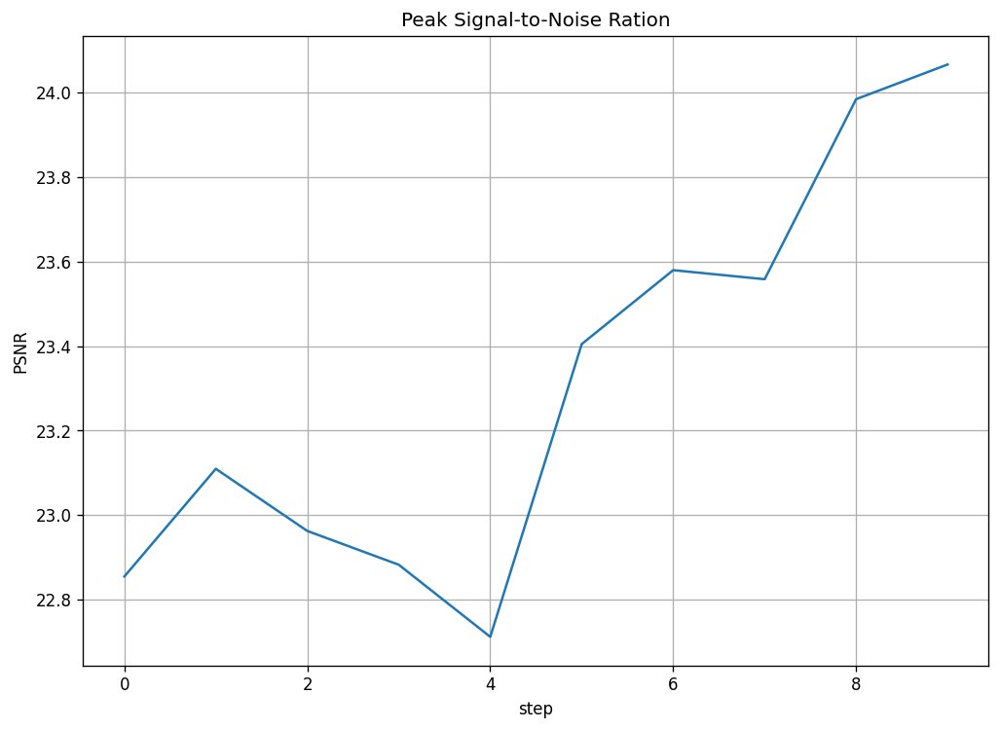
|
|
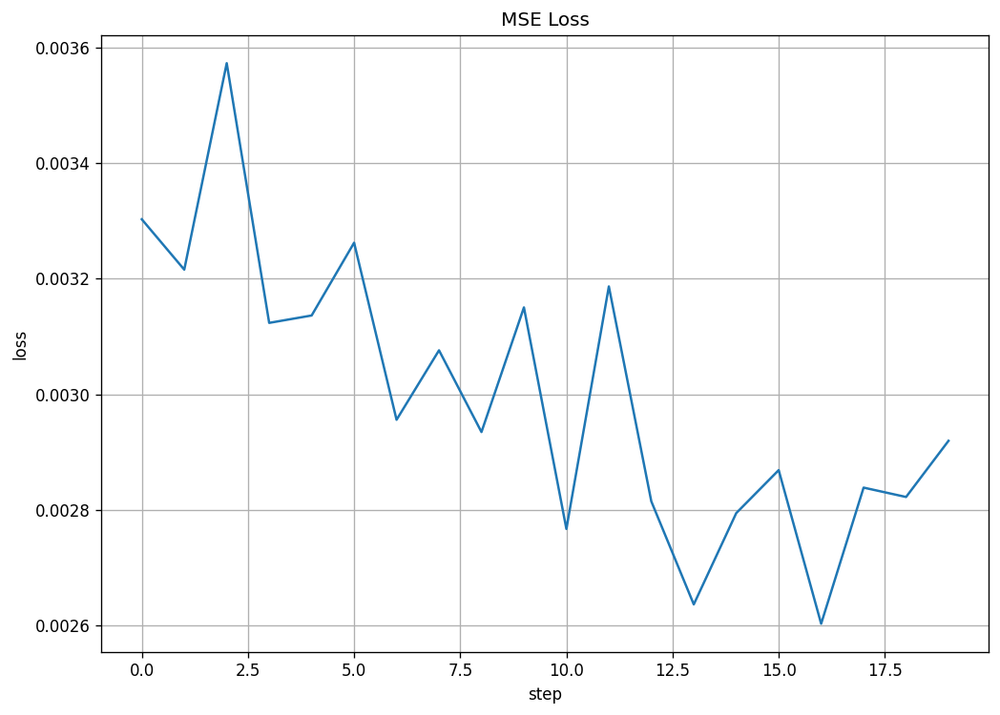
|
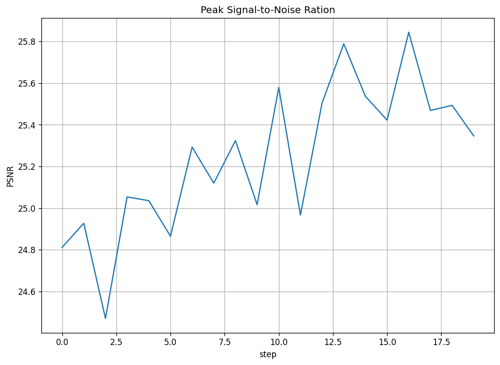
|
Visualize the Training Process:
|
|
||
|
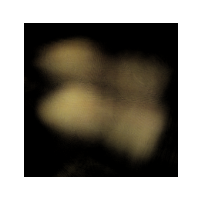
|
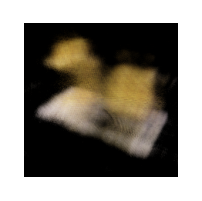
|
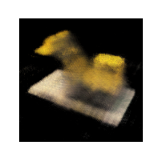
|
|
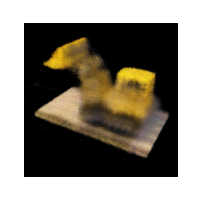
|
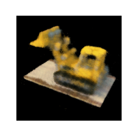
|

|
|
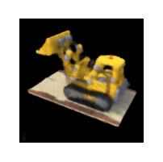
|
|
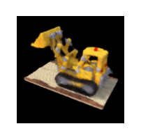
|
Spherical Rendering
|
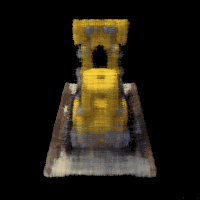
|
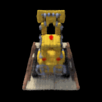
|
Bells & Whistles
Background Color
To add background color to my rendering, I need to adjust volume rendering algorithm. The new algorithm is: $$ \mathbf{C}(\mathbf{r}) = \sum_{i=1}^N T_i \cdot \alpha_i \cdot \mathbf{c}_i + T_N\cdot \mathbf{C}_{\text{bg}} $$ Where:- $\mathbf{C}(\mathbf{r}) $: Final color for the ray.
- $ T_i =\exp (-\sum_{j=1}^{i-1}\sigma_j\delta_j)= \prod_{j=1}^{i-1} \left( 1 - \alpha_j \right) $: Transmittance, the probability of a ray not terminating before sample location $i$.
- $\alpha_i = 1 - \exp(-\sigma_i \delta_i) $: The probability of terminating at sample location $i$.
- $\mathbf{c}_i $: Color emitted at the $i$-th point.
- $T_N$: Transmittance at the last sampled point.
- $\mathbf{C}_{\text{bg}}$: Background color.
|
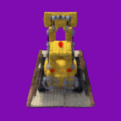
|
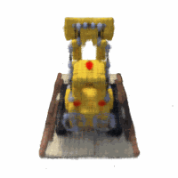
|
Depth Rendering
To perform depth rendering, I adapt the volumn rendering algorithm: $$ \mathbf{C}(\mathbf{r}) = \sum_{i=1}^N T_i \cdot \alpha_i \cdot D_i $$ Where:- $\mathbf{C}(\mathbf{r}) $: Depth for the ray.
- $ T_i =\exp (-\sum_{j=1}^{i-1}\sigma_j\delta_j)= \prod_{j=1}^{i-1} \left( 1 - \alpha_j \right) $: Transmittance, the probability of a ray not terminating before sample location $i$.
- $\alpha_i = 1 - \exp(-\sigma_i \delta_i) $: The probability of terminating at sample location $i$.
- $D_i$: Depth at sample location $i$.
|
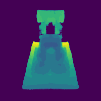
|
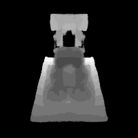
|